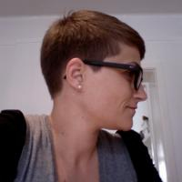
Alexandra Leisse left one stage to enter another and turn her other passion software and the web into a profession. After a transition period of 12 months of freelancing both in software and opera and sinking countless hours into KDE activities, she joined Nokia, Qt Development Frameworks as Web Community Manager. She is the woman behind the Qt Developer Network and Qt's community activities on the web. Despite holding a degree in opera performance, she mostly refuses to sing in public.
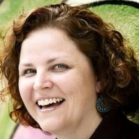
Anne Gentle is the fanatical technical writer and community documentation coordinator at Rackspace for OpenStack, an open source cloud computing project. Prior to joining OpenStack, Anne worked as a community publishing consultant, providing strategic direction for professional writers who want to produce online content with wikis with user-generated pages and comments. Her enthusiasm for community methods for documentation prompted her to write a book about using social publishing techniques for technical documentation titled Conversation and Community: The Social Web for Documentation. She also volunteers as a documentation maintainer for FLOSS Manuals, which provides open source documentation for open source projects.
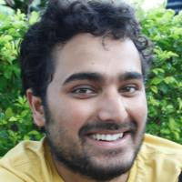
Atul Jha has been using Free Software since 1995. He is working as an Application Specialist at CSS Corp, Chennai, India. He loves visiting colleges, meeting students and spreading the word about Free Software.
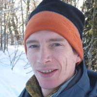
Dave Neary has been working on Free and Open Source projects since he discovered Linux in 1996. A long-time contributor to GNOME and the GIMP, he has worked full time helping companies come to terms with community-developed software since 2007. In that time, he has worked with projects including OpenWengo, Maemo and MeeGo on projects including event organization, community processes, product management and community metrics. As a volunteer, he has been involved in the organisation of GUADEC, the Desktop Summit, the Libre Graphics Meeting, the GIMP Conference, Ignite Lyon, the Open World Forum, and the MeeGo Conference.
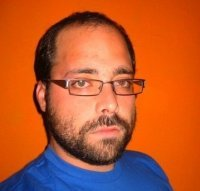
Jonathan "Duke" Leto is a software developer, published mathematician, Git ninja and avid bicyclist living in Portland, Oregon. He is a core developer of Parrot Virtual Machine and founder of Leto Labs LLC.
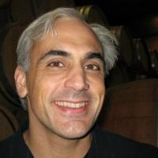
Evan Prodromou is the founder of Wikitravel, StatusNet and the Open Source social network Identi.ca. He has participated in Open Source software for 15 years as a developer, documentation writer, and occasional bomb-throwing crank. He lives in Montreal, Quebec.
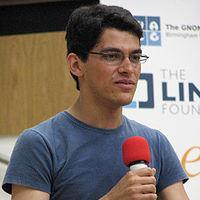
Federico Mena Quintero is one of the founders of the GNOME project, and was the maintainer of the GIMP some time before that. He worked at Red Hat Advanced Development Labs during the early days of GNOME, and later was one of the first hires at Ximian, where he worked mainly on the Evolution Calendar. He still works on GNOME in general, for Novell/Suse, and lives in Mexico.
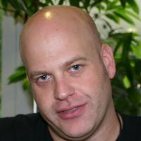
Frank Karlitschek was born in 1973 in Reutlingen, Germany and started to write software at the age of 11. He studied Computer Science at the University of Tübingen and became involved in free software and Internet technologies in the mid-1990s. In 2001, he started to contribute to KDE by launching KDE-Look.org, an artwork community site which later became the openDesktop.org network. Frank started several Open Source projects and initiatives like the Social Desktop, the Open Collaboration Services, the Open-PC and ownCloud. In 2007 he started a company called hive01 which offers services and products around Open Source and Internet technologies. Today Frank is a board member and Vice President of the KDE e.V. and a regular speaker at international conferences.
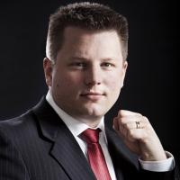
Georg Greve initiated the Free Software Foundation Europe in 2000 and was its founding president until 2009. During this time he was responsible for building up and designing many of FSFE's activities such as the Fellowship, the policy or legal work, and has worked intensively with many communities. Today he continues this work as shareholder and CEO of Kolab Systems AG, a fully Free Software company. For his accomplishments in Free Software and Open Standards Georg Greve was awarded the Federal Cross of Merit on ribbon by the Federal Republic of Germany on 18 December 2009.
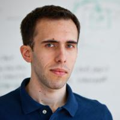
Guillaume Paumier is a photographer and physicist living in Toulouse, France. A long-time Wikipedian, he currently works for the Wikimedia Foundation, the non-proft that runs Wikipedia. As a product manager for Multimedia Usability, he notably conducted user research to design a new media upload system for Wikimedia Commons, the free media library associated with Wikipedia.
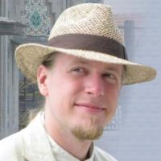
Henri Bergius is the founder of Midgard, a free software content repository. He has also been involved for a long time in making Linux desktops location-aware, and in the Maemo and MeeGo communities. He runs a small consultancy called Nemein, hacks in CoffeeScript and PHP, and spends much of his free time motorcycling through remote parts of the Eurasian continent. He lives in the cold Nordic city of Helsinki, Finland.
Jos Poortvliet works as openSUSE community manager for SUSE Linux. Before that he was active in the international KDE community as team lead for the marketing team. In his "offine life" he has had jobs at a variety of companies as Business Consultant. His favorite pastime is experimenting in the kitchen, trying to come up with something edible.
An internationally known community manager, speaker and author, Leslie Hawthorn has over 10 years experience in high tech project management, marketing and public relations. Recently she joined AppFog as their Community Manager, where she is responsible for developer engagement. Prior to AppFog, she served as Outreach Manager at Oregon State University's Open Source Lab and as a Program Manager for Google's Open Source Team, where she managed the Google Summer of Code Program, created the contest now known as Google Code-in and launched the company's Open Source Developer Blog.
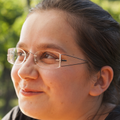
Lydia Pintscher is a people geek and cat herder by nature. Among other things, she manages KDE's mentoring programs (Google Summer of Code, Google Code-in, Season of KDE), is a founding member of KDE's Community Working Group and is a board member of KDE e.V.
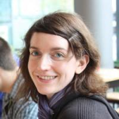
Máirín Duffy Strode has been using Free and Open Source software since she was in high school, and has been a contributor for the past 8 years. She is involved in both the Fedora and GNOME communities and has worked on interaction design, branding, and/or iconography for a number of prominent FOSS applications such as Spacewalk, Anaconda, virtmanager, SELinux and SSSD. She has also been involved in outreach efforts teaching children design skills using FOSS tools such as GIMP and Inkscape and is a
erce advocate for said tools. She is the team lead of the Fedora Design Team and a senior interaction designer with Red Hat, Inc.
Markus Krötzsch is a post-doctoral researcher at the Department of Computer Science of the University of Oxford. He obtained his Ph.D. from the Institute of Applied Informatics and Formal Description Methods (AIFB) of the Karlsruhe Institute of Technology (KIT) in 2010. His research interest is the intelligent automatic processing of information, ranging from the foundations of formal knowledge representation to application areas like the Semantic Web. He is the lead developer of the successful Semantic Web application platform Semantic MediaWiki, co-editor of the W3C OWL 2 speci
cation, chief maintainer of the semanticweb.org community portal, and co-author of the textbook Foundations of Semantic Web Technologies
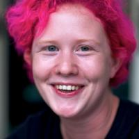
Nóirín Plunkett is a jack of all trades, and a master of several. A technical writer by day, her Open Source work epitomizes the saying “if you want something done, ask a busy person”. Nóirín got her Open Source start at Apache, helping out with the httpd documentation project. Within a year, she had been recruited to the conference planning team, which she now leads. She was involved in setting up the Community Development project at Apache and has previously acted as Org Admin for the Google Summer of Code. She sits on the boards of both the Apache Software Foundation and the Open Cloud Initiative. When she’s not online, Nóirín's habitat is the dance floor, although she’s also a keen harpist and singer, and an excellent sous chef!
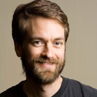
Rich Bowen has been working on Free/Open Source Software for about 15 years. Most of this time has been spent on the Apache HTTP Server, but he has also worked on Perl, PHP, and a variety of web applications. He is the author of Apache Cookbook, The Definitive Guide to Apache mod rewrite, and a variety of other books, and makes frequent appearances at various technology conferences.
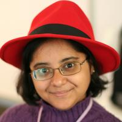
For the past 10 years, Runa Bhattacharjee has been translating and working on localizing numerous Open Source projects - ranging from Desktop interfaces to Operating System tools and lots of things in between. She strongly believes that upstream repositories are the best places to submit any form of changes. She also holds a professional portfolio specializing in Localization, at Red Hat. Runa translates and maintains translations for Bengali (Indian version), but is always happy to help anyone wanting to get started with localization.
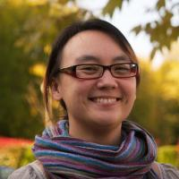
Selena Deckelmann is a major contributor to PostgreSQL. She speaks internationally about free software, developer communities and trolling. Her interests include opening up government data with the City of Portland, urban chickens and finding ways to make databases run faster. She founded and cochaired Open Source Bridge, a developer conference for open source citizens. She founded the PostgreSQL Conference, a successful series of east coast/west coast conferences in the US for PostgreSQL. She is currently on the program committees of PgCon and MySQL Users Conference, and OSCON data. She's a contributing writer for the Google Summer of Code Mentor Manual, and Student Guide. She is an advisor to the Ada Initiative and board member of Technocation, Inc.
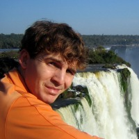
Shaun McCance has been involved in GNOME documentation since 2003 as a writer, community leader, and tool developer. He has spent most of that time wondering how to get more people to write better documentation, with some success along the way. He offers his experience in community documentation through his consulting company, Syllogist.
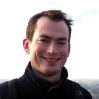
Stuart Jarvis began working with the KDE Promotion Team in 2008 by writing articles for KDE's news website, KDE.News. He learned the hard way how to get things done in a free software community and got more involved with promotion team activities such as writing KDE's release announcements and getting articles about KDE software into the Linux press. He now sits on KDE's Marketing Working Group, helping to set the direction of KDE's promotion and marketing activities and helping new contributors to find their feet. He is also now part of the editorial team for KDE.News, where his involvement with KDE first began.
Originally from a liberal arts and music background, Till Adam has spent the last decade or so in software. He works at KDAB where he directs services, including the company's Free Software activities. Till also serves on the board of directors of Kolab Systems AG, a company with a pure Free Software business model. He lives with his wife and daughter in Berlin.

Armijn Hemel has been using free software since 1994, when his brother came home with a stack of floppies with an early version of FreeBSD. A year later the switch to Linux was made and he has been using Unix(-like) systems ever since then, both at home, during his studies at Utrecht University and at work. Since 2005, Armijn has been part of the core team of gpl-violations.org and has his own consultancy (Tjaldur Software Governance Solutions) specialized in detection and resolution of GPL license violations.
Felipe Ortega is a researcher and project manager at Libresoft, a research group at University Rey Juan Carlos (URJC), Spain. Felipe develops novel methodologies to analyze open collaborative communities (like free software projects, Wikipedia and social networks). He has done extensive research with the Wikipedia project and its community of authors. He actively participates in research, promotion and education/training on libre software, especially in the Master on Libre Software at URJC. He is a strong advocate of open educational resources, open access in scientific publishing and open data in science.
Kévin Ottens is a long term hacker of the KDE community. He contributed to the KDE Platform at large, with a strong emphasis on API design and frameworks architecture. Graduating in 2007, he holds a PhD in computer science which led him to work particularly on ontologies engineering and multi-agent systems. Kévin's job at KDAB includes developing research projects around KDE technologies. He still lives in Toulouse where he serves as part time teacher in his former university.
Jeff Mitchell spends his working days dabbling in all sorts of computer and networking technologies, his off-time dabbling in all sorts of FOSS projects and most enjoys a confluence of both. After serving as a system administrator in a professional capacity between 1999-2005, he has since kept his skills sharp by performing volunteer work for various workplace and FOSS projects. These days, most of his FOSS time is spent as a sysadmin for KDE and a core developer of Tomahawk Player. Jeff currently lives in Boston, USA.
Thiago Macieira holds a double degree in Engineering and an MBA, but his involvement in Open Source predates those, getting close to 15 years now. An active participant in the KDE, Qt and MeeGo communities, he's been a software engineer and product manager for Qt, giving presentations and listening to people. These days, Thiago lives in Oslo, Norway and when he's not working on Qt, he tries (with limited success) to improve his skills at StarCraft 2.
Kai Blin is a computational biologist searching for antibiotics in his day job, both at the computer and in the lab. He feels very happy that he gets to release the software developed at work under Open Source licenses. Living in the lovely southern German town of Tübingen, Kai spends some of his evenings at the computer, programming for the Samba project. Most of his remaining spare time is spent at the theatre, where Kai is active both on stage as well as building props, stage and handling other techie things backstage.
Ara Pulido is a testing engineer working for Canonical, first as part of the Ubuntu QA team, and now as part of the Hardware Certification team. Although she started her career as a developer, she quickly found out that what she really liked was testing the software. She is very interested in new testing techniques and tries to apply her knowledge to make Ubuntu better.
In real life, Andre Klapper is a bugmaster. During lunch break or while sleeping he works on random things in GNOME (bugsquad, release team, translation, documentation, etc) or Maemo, or studies, or eats ice cream.
An active member of Free Software and KDE for about 6 years, Eugene Trounev started in KDEGames and followed through the entire KDE3-to-KDE4 transition. Nowadays he is mostly taking care of KDE's web presence and main desktop appearance.
Robert Kaye combines his love for music and open source into the open music encyclopedia MusicBrainz. Robert founded and leads the Californiabased non-profit MetaBrainz Foundation in a long term effort to improve the digital music experience. Beyond hacking on MusicBrainz, Robert seeks out interesting festivals like Burning Man and interesting side projects like hacking on drink-mixing robots. Topped with a colorful hair style at all times, you will never have a hard time picking him out of a crowd.
Jono Bacon is a community manager, engineering manager, consultant and author. Currently he works as the Ubuntu Community Manager at Canonical, leading a team to grow, inspire and enthuse the global Ubuntu community. He is the author of Art of Community, founder of the Community Leadership Summit and co-founder of the popular podcast LugRadio.
Jonathan Riddell is a KDE and Kubuntu developer currently employed by Canonical. When not at a computer he canoes the rivers of Scotland.
Thom May is a Debian Developer, an emeritus Member of the Apache Software Foundation and was one of the first hires for Canonical, Ubuntu's parent company. He currently lives in London and is Head of DevOps for Macmillan Digital Science.
Vincent Untz is an active Free Software enthusiast, GNOME lover and advocate, as well as an openSUSE booster. He held the position of GNOME Release Manager between 2008 and 2011, until GNOME 3.0 went out, was an active GNOME Foundation director (2006-2010) and is leading the GNOME team in openSUSE. However, he finds it simpler to declare he is a "touche-à-tout", working on various (some say random) areas of the desktop and helping openSUSE stay amazing. Vincent is still pushing French as official language for GNOME, and hopes to succeed really soon now. And he loves ice cream.
Active in the Web since 1993, Sally Khudairi is the publicist behind some of the industry's most prominent standards and organizations. The former deputy to Sir Tim Berners-Lee and long-time champion of collaborative innovation, she helped launch The Apache Software Foundation in 1999, and was elected its first female and non-technical member. Sally is Vice President of Marketing and Publicity for The Apache Software Foundation, and Chief Executive of luxury brand communications consultancy HALO Worldwide.
Gareth J. Greenaway has been actively involved in the Free & Open Source community since 1997 after discovering Linux. A majority of this involvement has been gathering like-minded people to learn and experience new elements of Free & Open Source software. This involvement began with a small Linux Users Group and has expanded into organizing the Southern California Linux Expo, also known as SCALE. As one of the founding members of the event, Gareth current holds two key positions with the organization. The first role is Conference Operations and the second is Community Relations.
Carlo Daffara is a researcher in the
eld of Open Source-based business models, collaborative development of digital artifacts, and Open Source software employment in companies. He is part of the editorial review board of the International Journal of Open Source Software & Processes (IJOSSP) and member of the technical board of two regional Open Source competence centers, as well as member of the FSFE European Legal Network. He has been part of SC34 and JTC1 committees in the Italian branch of ISO, UNINFO.Previous to that, Carlo Daffara was the Italian representative at the European Working Group on Libre Software.He chaired the SME working group of the EU Task Force on Competitiveness, and the IEEE open source middleware working group of the Technical Committee on Scalable Computing.
Dr. Till Jaeger has been a partner at JBB Rechtsanwaelte since 2001. He is a Certified Copyright and Media Law Attorney and advises large and medium-sized IT businesses as well as government authorities and software developers on matters involving contracts, licensing and online use. One particular focus of his work is on the legal issues created by Free and Open Source Software. He is co-founder of the Institute for Legal Aspects of Free & Open Source Software (ifrOSS). He provides advice on compliance with open source licenses and on compatibility issues, and helps developers and software companies to enforce licenses. Till represented the gpl-violations.org project in several lawsuits to enforce the GPL and has published several articles and books related to legal questions of Free and Open Source Software. He was a member of the Committee C in the GPLv3 drafting process.
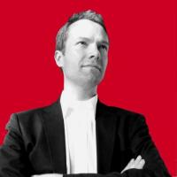
Shane Coughlan is an expert in communication methods and business development. He is best known for building bridges between commercial and non-commercial stakeholders in the technology sector. His professional accomplishments include establishing a legal department for the FSFE, the main NGO promoting Free Software in Europe, building a professional network of over 270 legal and technical experts across 27 countries, cofounding a binary code compliance tool project and aligning corporate and community interests to launch the first law review dedicated to Free/Open Source Software. Shane has extensive knowledge of Internet technologies, management best practice, community building and Free/Open Source Software.
This site was created by Debajyoti Datta, Saransh Sinha & Supreet Pal Singh